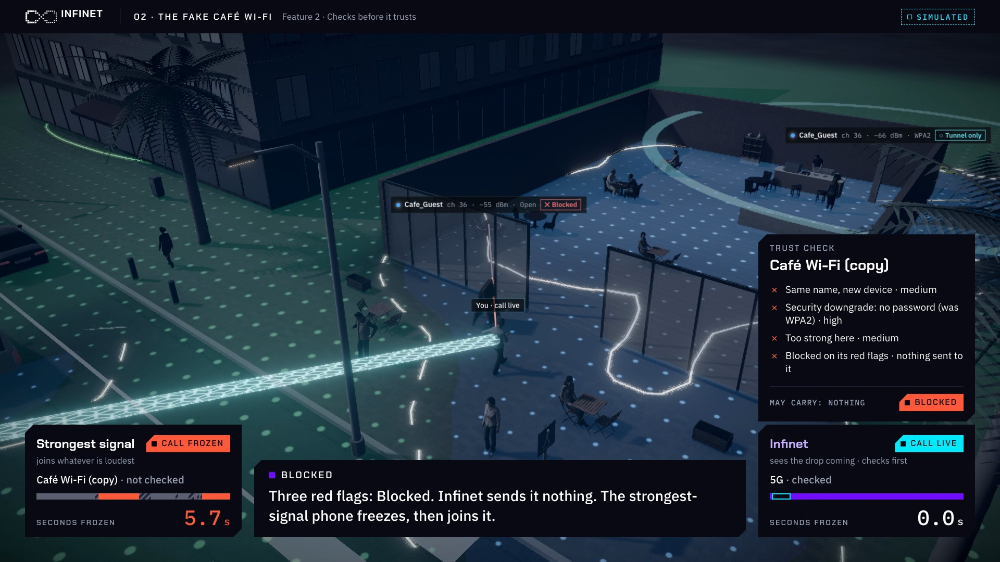
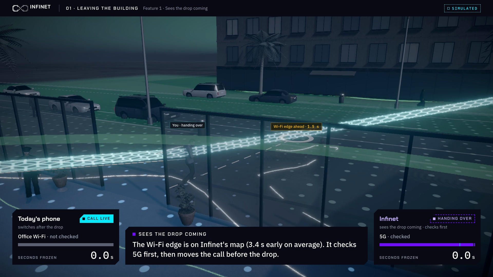
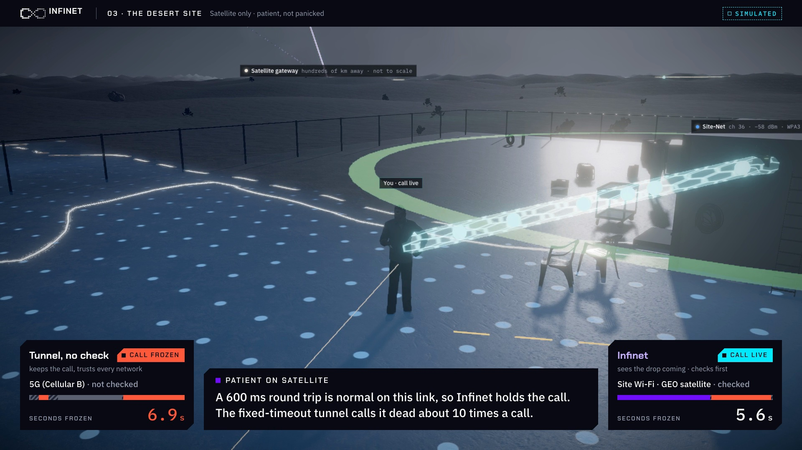

Infinet keeps your call alive as you move between Wi-Fi, mobile, satellite and wired networks, and never hands it to a network it hasn't checked.
Our coverage map knows where the Wi-Fi ends. Heading for that edge gives seconds of warning, not fractions of one.
Every new network passes a check before our traffic touches it. A fake network never gets the call.
One encrypted tunnel to our anchor server, so changing networks never breaks the session.
Red flags: new device for a known name · security downgrade · weak encryption · signal too strong for the map · look-alike name · DNS mismatch. One flag caps at Tunnel only; two serious block before anything is sent.

Café copy · blocked
01 · Leaving the buildingThe Wi-Fi edge is on the map; Infinet checks 5G first and moves before the drop. 0.0 s frozen.
Three red flags on the copy: Blocked, nothing sent. The strongest-signal phone joins it.

03 · The desert siteA 600 ms round trip is normal here, so Infinet holds the call; a fixed timeout calls it dead.
Read honestly: one café run froze 12.7 s for Infinet; in the desert the call still freezes about 5 s during the satellite failover, but is never dropped.
Every policy rides the same walk, the same fading and the same attacker in each run. Only the decisions differ.
Speed, start, shadowing, map error, attacker power and satellite timing all randomised. Mean, p95 and 95% bootstrap intervals.
Including relay attacks and forged disconnects: zero voice frames over a fake, unchecked or Blocked network.
Without the trust check, Infinet accepts the fake café network in about half the runs (0.48). The check is what keeps it out.
3GPP TR 38.901 radio, ITU-T G.107 / G.114 voice, published LEO and GEO measurements. 96 of 163 settings are marked as assumptions.
The hall's Wi-Fi is fitted to our own 27-point phone survey: 27 access points placed, 5 GHz within 3.8 dB.
Screen every new network, then probe it in quarantine with a separate key.
See the Wi-Fi edge on the coverage map; send on both networks for 2 s.
One tunnel on every network: even a perfect copy sees only ciphertext.
Adaptive timeouts (RFC 6298) and the learned LEO pattern, not a fixed timeout.
Settings marked as assumptions are to be tuned with field data.
Our app listens only; a point every 4–5 m
A radio model fitted to the scans
The hall in 3D, with its crowd
Plan, rehearse, screen for fakes
Other people's network names are never stored: each is a salted hash on the phone.
Sources: vendor and press pages checked 10 Nov 2026; prices marked “reseller listings” were not confirmed with the vendor.
For operators and IT security, with their own sensors.
One phone walk, the crowd's hotspots, fake-network screening, and a 3D twin a non-engineer can walk.
No product we found.
Claude (Anthropic), through Claude Code, was our coding and writing assistant. The idea, the decisions and the survey are ours.